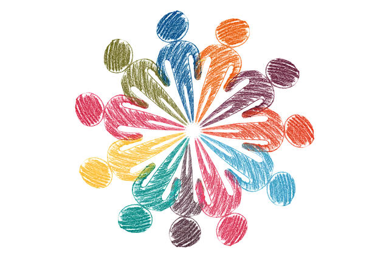

La Importancia de Donar: Contribuyendo al Bienestar común

La donación de dinero y bienes es un acto de generosidad que desempeña un papel fundamental en la construcción de sociedades más fuertes y solidarias. A lo largo de la historia, la humanidad ha reconocido el valor de compartir recursos para ayudar a aquellos que están en necesidad. A continuación, exploraremos por qué donar es una práctica tan esencial y cómo impacta positivamente en la vida de las personas y comunidades.
1. Apoyo a Causas Humanitarias: La donación de dinero y bienes permite financiar y proporcionar recursos a organizaciones sin fines de lucro y programas destinados a abordar problemas críticos como la pobreza, el hambre, la atención médica, la educación y la ayuda en desastres naturales. Estas contribuciones son un pilar para mejorar la calidad de vida de quienes se encuentran en situaciones vulnerables.
2. Fomento del Desarrollo Social:Las donaciones no solo alivian las necesidades inmediatas, sino que también fomentan el crecimiento a largo plazo. La inversión en proyectos de desarrollo comunitario y programas educativos crea un impacto duradero al empoderar a las personas con las herramientas necesarias para prosperar y contribuir a sus comunidades.
3. Reducción de Desigualdades:Las disparidades económicas y sociales son un desafío persistente en el mundo actual. Donar ayuda a nivelar el terreno de juego, reduciendo la brecha entre aquellos que tienen recursos y aquellos que no. Esto contribuye a construir sociedades más justas y equitativas.
4. Inspiración para la Acción: Cuando las personas donan, sirven de inspiración para otros. El acto de dar crea un efecto dominó, alentando a más individuos y organizaciones a unirse a la causa y multiplicando el impacto.
5. Sentido de Propósito y Satisfacción Personal: La donación no solo beneficia a los receptores, sino que también proporciona un profundo sentido de propósito y satisfacción personal a los donantes. Saber que has contribuido a hacer del mundo un lugar mejor es intrínsecamente gratificante.
6. Fortalecimiento de Valores y Ética: La donación refleja los valores de compasión, solidaridad y empatía. Ayuda a fortalecer una cultura de responsabilidad social y ética, recordándonos la importancia de cuidar de los demás y del entorno.
En resumen, donar dinero y bienes es una práctica que trasciende fronteras y culturas, generando un impacto positivo en las vidas de las personas y en la sociedad en su conjunto. Cada contribución, sin importar su tamaño, tiene el potencial de marcar la diferencia. Al adoptar la filantropía como parte de nuestra vida, colaboramos en la construcción de un mundo más compasivo y justo, donde todos tengan la oportunidad de prosperar. La importancia de donar no puede ser subestimada, ya que su influencia se siente a nivel local, nacional y global.